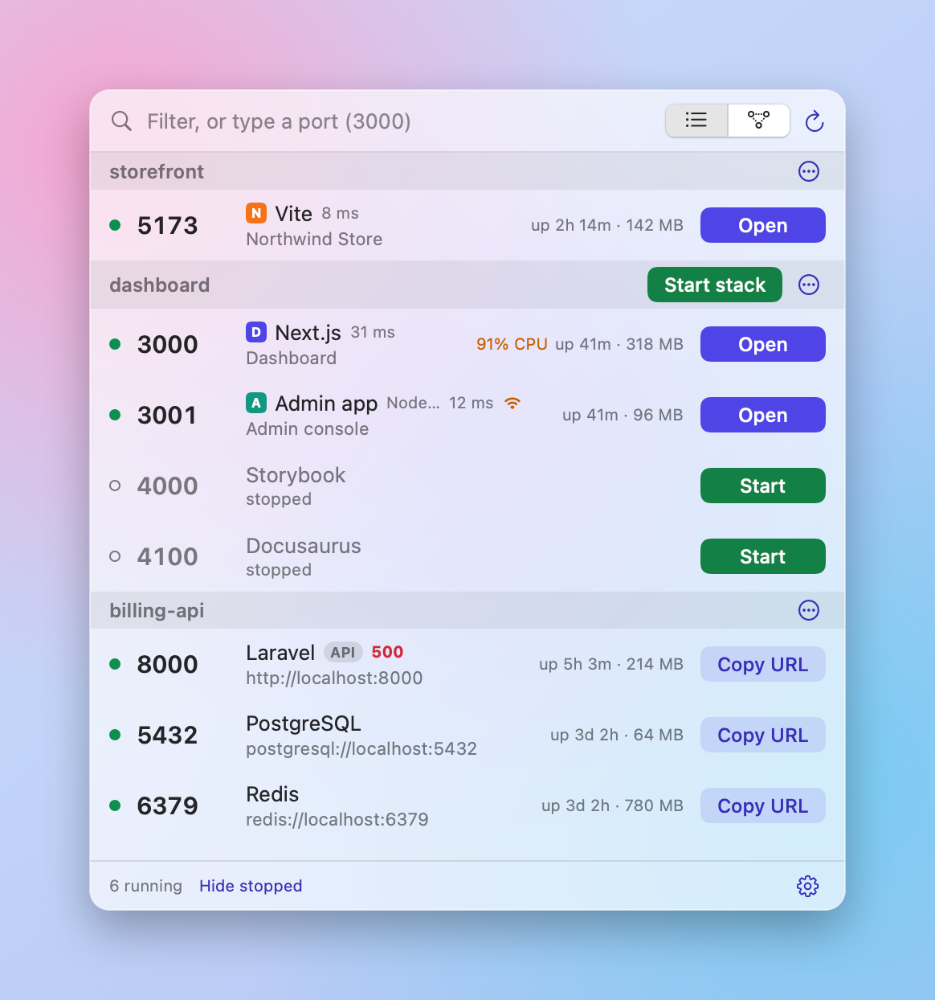
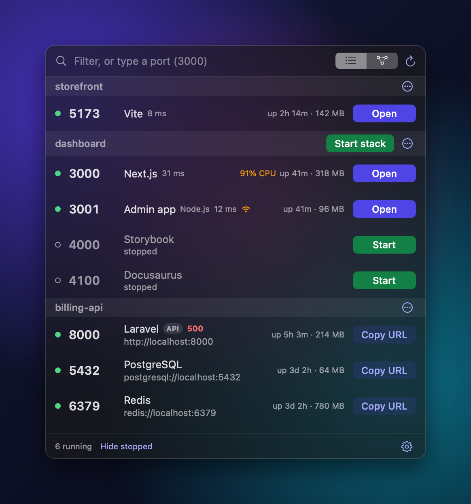

Every local port, with its project.
Switchboard sits in your Mac menu bar and shows everything running on localhost, grouped by project. Open it, restart it, read its logs or stop it without going back to the terminal.
Free and open source. Needs macOS 14 or later.




You have five projects and eight servers. Which one is holding port 3000?
The whole local stack, in one place.
Switchboard reads what is listening on your Mac, works out which project owns each port, and puts the right action next to it.
See what depends on what.
A map shows which servers talk to each other. Stop the database and it tells you the API and the web app are still using it, before you pull the plug.
No more “port already in use”.
Type a port to see who has it. If you start something whose port is taken, Switchboard says who is using it and offers the next free one. You can also move a running server to another port, and undo it.
Next.js (dashboard) is using it, so Node.js would fail to start. Start it on :3001 instead?
Pick up where you left off.
Stopped servers stay on the list. One click starts the whole project again, in the order its servers depend on each other. Save a switchboard.json in your repo and a teammate gets the same stack.
// switchboard.json { "name": "billing", "services": [ { "name": "db", "port": 5432 }, { "name": "api", "port": 8000, "dependsOn": ["db"] } ] }
The right button every time
Open for web pages. Copy URL for APIs and databases. No guessing which one you want.
Undo after Stop
Stopped the wrong thing? Undo starts it again, in the same folder with the same command.
Logs right here
Output follows live inside the popover. Filter it, copy it, or send it to Terminal, iTerm, Ghostty, Warp, tmux and more.
Why did it stop?
Crash, closed terminal, or another process took the port. It tells you which, with the last lines of output.
From the terminal too
The Homebrew install adds a switchboard command for status, start and stop.
Free. Open source. Yours in a minute.
Install with Homebrew, or download the app.
Switchboard is not notarized yet, so macOS asks you to confirm the first launch. Open System Settings, then Privacy & Security, and click Open Anyway. You can also run xattr -dr com.apple.quarantine /Applications/Switchboard.app once.
Questions
How do I see what is using port 3000 on a Mac?
Type 3000 in Switchboard's filter box. It shows whether the port is free and, if not, which process and project holds it. In Terminal the equivalent is lsof -nP -iTCP:3000 -sTCP:LISTEN. More on finding what holds a port.
How do I kill the process on a port on macOS?
Click Stop on the server's row. In Terminal: kill $(lsof -t -iTCP:3000 -sTCP:LISTEN). How to do it safely.
How does the map know what is connected?
It looks at the open connections between servers on your Mac right now. Arrows point at the server being used. A solid line means a connection was seen. A dashed line means a project's .env names that port but no connection was seen. A red line means the server answers with an error, or the .env names a port where nothing is listening. A missing line does not prove two servers are unrelated, because a connection that is closed when it looks cannot be seen. The dashed box is the project folder, nothing more.
What does “address already in use” mean?
Another process is already listening on the port your server asked for. Stop it or start yours on another port. Three ways to fix it.
Does it work with Docker?
Yes. Containers with published ports are listed next to your other servers, and you can stop, restart and read their logs.
Does it send any data anywhere?
Very little. Switchboard reads your local ports and processes and keeps its settings on your Mac. At launch and every few hours it asks GitHub whether a newer version exists, and sends nothing about you. You can turn that off in the settings menu. A public link only starts if you ask for it and uses cloudflared or ngrok. The code is on GitHub if you want to check.
Is it free?
Yes. It is open source under the MIT license and installs with Homebrew.